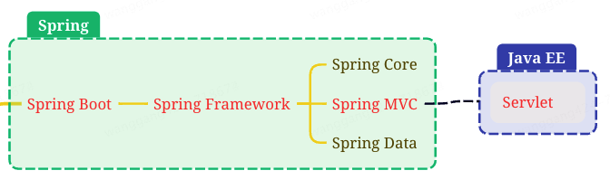
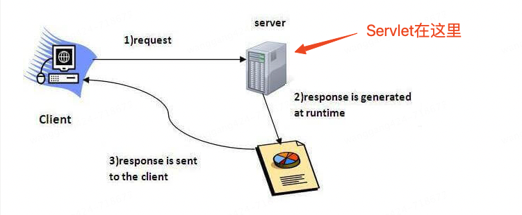
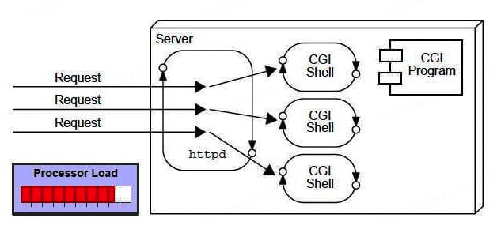
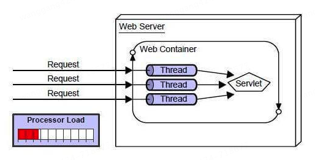

本书作者：测试开发刚哥，文章版权归个人所有，未经授权请勿转载。
Servlet 是什么？

现在的 Java Web 开发，很少直接接触到 Servlet。在 Spring 项目中，Spring Boot 基于 Spring Framework，简化了 Spring 应用程序开发，Spring Framework 是一个全面的 Java 应用程序框架，其中包含 Spring MVC 模块，Spring MVC 封装了 Servlet，以实现 Web 功能。Servlet 不属于 Spirng 项目，而是 Java EE（后改名为 Jakarta EE）的一部分。
Oracle 将 Java EE（Java SE 还自己保留）交给开源组织，Eclipse 基金会接手。但 Oracle 不允许开源组织使用 Java 名号，所以 Jakarta EE 名称于 2018.02.26 应运而生。
Servlet 可以有很多种描述：
-
Servlet 是一个技术，用来创建 Web 应用程序
-
Servlet 是一个 API，提供了很多接口、类和文档
-
Servlet 是一个接口，必须实现该接口来创建 Servlet
-
Servlet 是一个类，位于服务端，接收请求，返回响应
-
Servlet 是一个 Web 组件，用来创建动态 Web 页面

CGI 与 Servlet
在 Servlet 技术出现以前，Web 应用程序是通过 CGI（Common Gateway Interface），一种脚本语言，来实现的。

但是 CGI 存在很多缺点：
-
如果客户端增多，服务端响应会变慢
-
对于每个请求，CGI 都会创建一个进程，进程数有限
-
依赖 C、C++、perl 等编程语言
Servlet 技术出现以后，解决了很多 CGI 问题：
-
性能：每个请求创建一个线程，而不是进程
-
可移植性：因为使用了 Java 语言
-
健壮性：JVM 管理 Servlet，无需关心内存泄漏、垃圾回收等
-
安全性：因为使用了 Java 语言

总的来说，Servlet 是 Server Applet，服务端小程序。它是单例多线程的，每个 Servlet 类在 Web 容器中只有一个实例，每次客户端请求，Web Server 都会从线程池中分配一个线程去创建 Servlet，每个请求由一个独立的线程处理，这些线程共享同一个 Servlet 实例，通过 HTTP 协议接收和响应来自 Web Client 的请求。
参考资料：